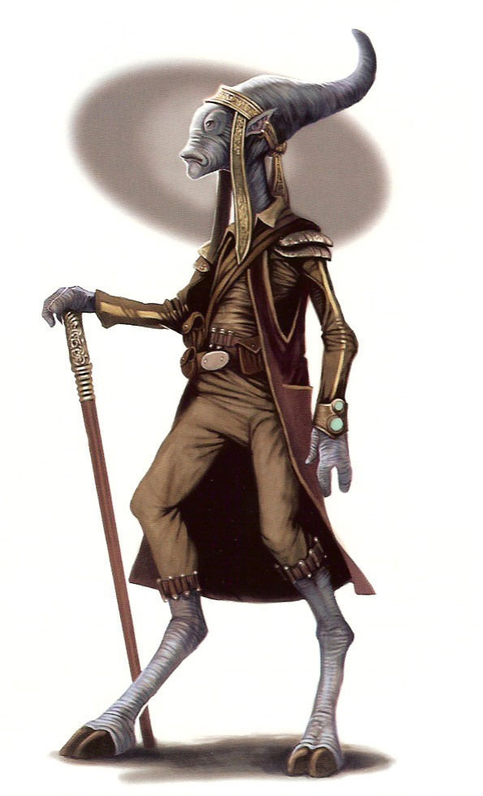

Gossam
gossam
Special Abilities: Gossams begin the game with one rank in Deception. They still may not train Deception above rank 2 during character creation.
Small: Gossams are smaller than average and count as silhouette 0.
A small species of reptilian origin, Gossams have exerted a greater influence on galactic history than their slender frames might suggest. Gossams have a reputation for being unable to resist a profitable venture, such as prominent colonies and even pirate fleets. In a move that turned out to be spectacularly unprofitable, the Gossam leader of the Republic’s Commerce Guild secretly colluded with the Confederacy of Independent Systems in the Separatist crisis, but the Gossam species weathered the fallout more easily than other Separatist allies. The Empire’s retribution was typically indiscriminate, but the Gossams’ natural independence and diversified interests weakened any attempts to pin consequences upon them. Gossams on their homeworld—Castell—were enslaved by the Empire, and the species was banned from setting foot on Coruscant. However, independent members of the species remain spread throughout the galaxy, waiting for the right moment to assert their interests. Many of these individuals—entrepreneurs, explorers, and members of a thousand other professions—have thrown in their sympathy or resources with the Rebellion.
Although they rarely stand over 1.25 meters tall, Gossams have a striking appearance, with vivid yellow eyes and rugged, bumpy blue or green skin. Though they are short, their long necks and lithe forms lend them a semblance of greater height. Gossams move with an easy grace on three-toed feet, and their three-fingered hands are just as capable of fine manipulation as those of species with more digits.
After a devastating economic depression that crippled their society, Gossams restructured their lives around the Republic’s Commerce Guild. Initially, all Gossams were indentured to the Commerce Guild to pay off a debt for the stabilization of their homeworld, Castell. Their situation improved over time, but their society has retained the tradition of beginning adult life with a period of indenture in order to gain experience with the galaxy at large.
Of course, Gossams have never been great sticklers for tradition, so with the dissolution of the Commerce Guild and the Empire’s seizure of Castell, few cultural factors remain to unify Gossams still at large in the galaxy. Their shrewd ability to avoid being pinned down defines them more than anything else.
The Gossam homeworld of Castell is a heavily industrialized foundry world. Before the rise of the Empire, the production lines of Castell were a source of wealth and influence for the species, even if their exploitative indenture system kept the workers from receiving direct benefit. Castell produced virtually everything, including luxury goods, speeders, and even advanced starship components. Now, the Imperial occupation has forced Gossams to retool their manufacturing plants to produce the munitions and other tools of conquest that keep them oppressed. The indenture experienced in the years prior to the occupation pales in comparison to the grinding slave labor Imperial overseers now demand, and as long as the Empire stands, no end is in sight.
The Gossam language, consisting primarily of croaking and trilling, is nearly impossible for other species to reproduce or understand, so most Gossams speak fluent Basic. The written form of Gossam is easier for other species to learn, and features a structure that links numerous small words to describe a larger concept. Thus, Gossams have a habit for wordy, verbose writing, even in Basic.
Gossams give up even the smallest bit of independence with great reluctance, and only when they are sure to benefit. A Gossam rarely adopts a cause without seeking to profit from it. However, even though the Rebellion has seemingly little to offer, many free Cossams find themselves with Rebel sympathies, giving everything they have in the hopes of securing a future improved beyond price.
Rebel Cossams often take up jobs that require little oversight and allow them to use their genius for improvisation. They operate in intelligence as often as they do in diplomacy, and a few have even found their way into command positions. Steady nerves and a high-risk, high-reward attitude lead a surprising number of elite Cossams to pilot Rebel starfighters.
Because of the Gossams’ support of the Separatist cause, the Empire issued an edict banning the species from visiting or staying on the capital world of Coruscant. The new law was enacted with no warning given to the numerous Gossam merchants, pilots, and travelers on planet at the time. Enforcement began almost immediately, so many Gossams found themselves suddenly hunted by agents of the new law, and their ships and assets were seized by the Imperial authorities.
Many of the Gossams visiting Coruscant were immediately apprehended, but a surprising number were able to evade capture through connections with the underworld, ties with shipping guilds, or their innate cunning. A few were able to smuggle themselves offworld, but most were stuck on Coruscant as wanted criminals. These Gossams on Coruscant, along with other victims of punitive Imperial justice, organized a resistance movement code-named Whiplash.
Operatives of Whiplash are rarely able to make contact with the Rebellion, much less join its operations, but the two organizations share information and resources for mutual benefit whenever possible. The Rebel Alliance desperately needs intelligence from the center of Imperial activity, and it often finds use for personnel who become too notorious for Whiplash to shelter. In return, trusted smugglers and agents of the Rebellion provide Whiplash with their only lifeline to the galaxy beyond Coruscant, including supply runs, communications, and the occasional exfiltration. Despite their close relationship, meetings between agents are fraught with tension and mistrust, as the dangers of betrayal are never greater than at the heart of Imperial power.